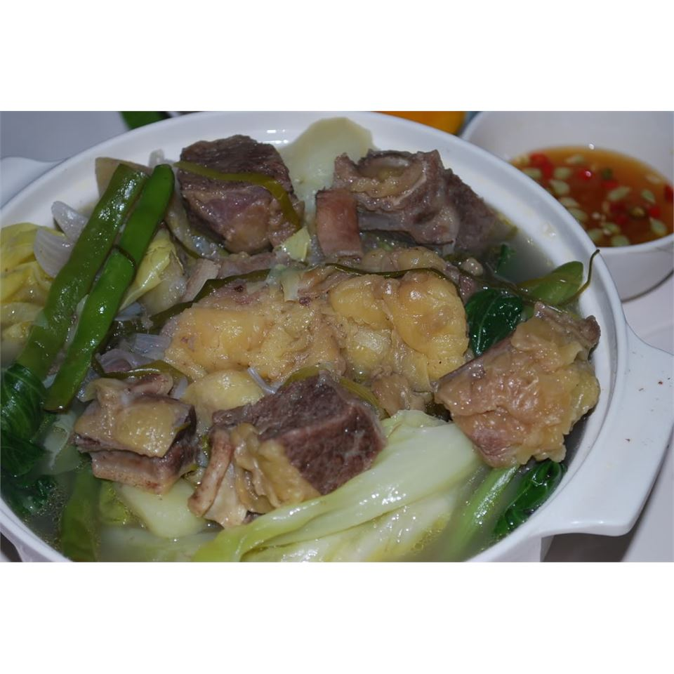

Beef Nilaga

Description:
This is another one-meal-in-a-pot dish. It contains soup, meat and vegetables all cooked together in one delicious broth. Terrific during cooler weather. Serve hot alone or with rice.
Ingredients:
- 4 ½ pounds beef short ribs
- 1 quart water
- 1 tablespoon black peppercorns, crushed
- 2 onions, chopped
- 2 beef bouillon cubes
- 2 carrots, cut in chunks
- 2 stalks celery, quartered
- 1 chayote squash, peeled and quartered
- 2 potatoes, quartered
- salt to taste
- ¼ head cabbage, cut into wedges
Steps:
- Place the beef ribs in a large pot with enough water to cover. Bring to a boil over high heat, and boil for 5 minutes. Drain; discard the cooking water (the ribs will not be fully cooked).
- Return the beef to the pot. Pour in the 1 quart water, peppercorns, onions, and beef bouillon. Bring to a boil, cover, reduce the heat, and simmer for 1 hour.
- Skim any fat floating on the surface. Stir in the carrots, celery, chayote, and potatoes; cover, and simmer until potatoes are tender, about 20 minutes. Season with salt. Add cabbage and cook an additional 5 minutes.